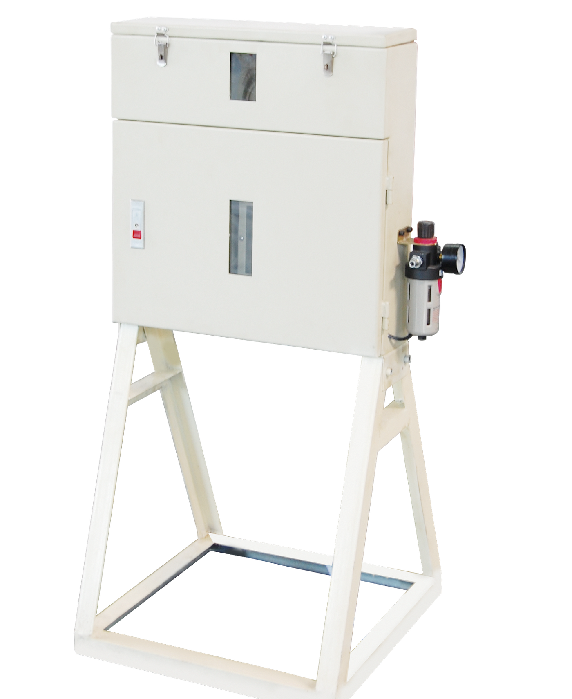
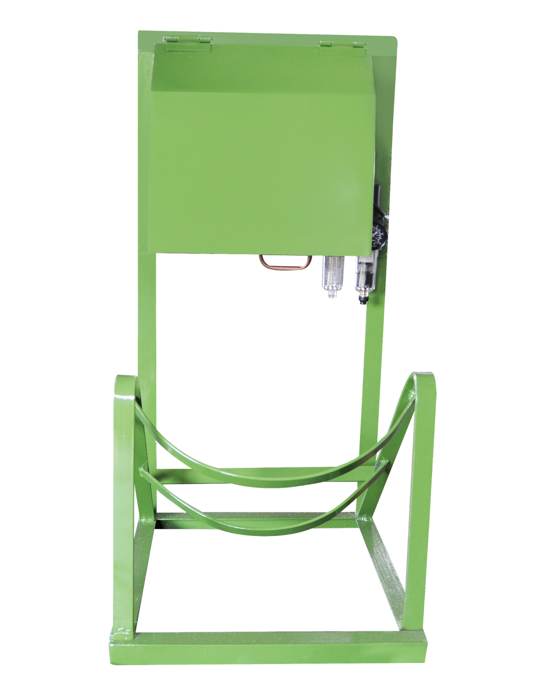

Lubricating Device for Shot Beads
- Easy-to-use and applicable for various sizes of granules.
- The feeding structure allows providing an accurate amount to die casting machine.
- Less oil pollution and therefore keep a tidy environment.

Lubricating Device for Plunger Oil
- Lubricate the injection sleeve to reduce friction and extend the period of use.
- The volume can be adjusted to avoid leaving oil spots on die castings and reducing cost.
- Robust design allows long-term use.